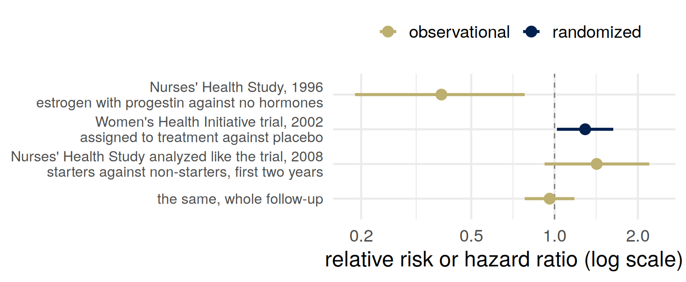
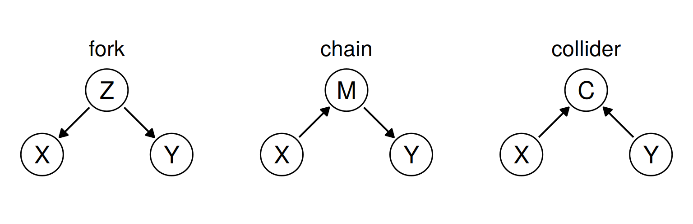
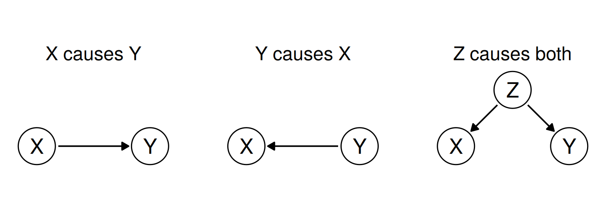
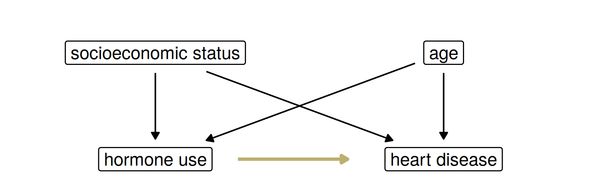
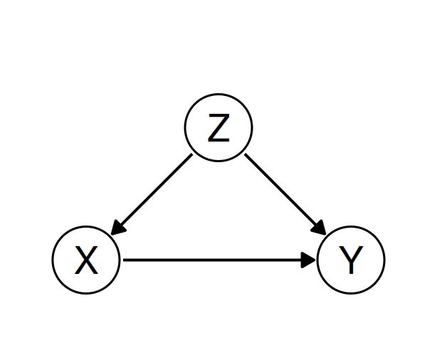
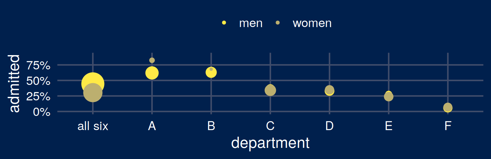
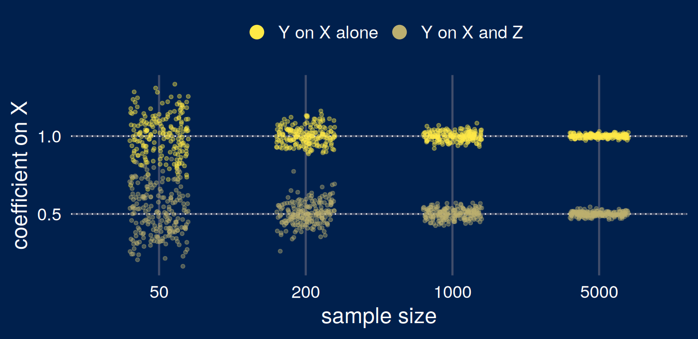
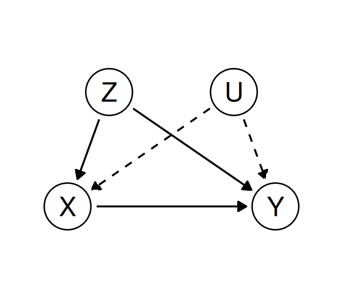
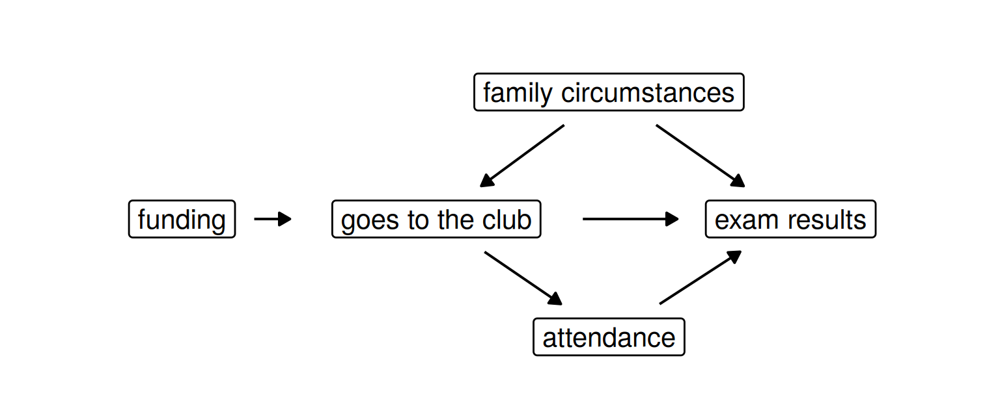

Part 1: Four ways to judge an action
Part 2: Causal models
Part 3: Confounding and adjustment
Part 4: Two registers
| judges an action by | a difficulty | |
|---|---|---|
| Consequentialism | its effects | “predicting consequences” |
| Deontology | whether it follows a rule or a duty | a rule kept where it leads somewhere terrible |
| Virtue ethics | the character it expresses | virtues conflict |
| Pragmatic ethics | norms held like hypotheses, revised by inquiry | how people judge, or how they should? |
“These approaches are not mutually exclusive or exhaustive, so we do not have to choose one of them or limit our thinking to using only these ideas.”
ms4ds, section 3.2.2 (the quotation) and sections 3.2.2.1 to 3.2.2.3 (the first three rows); Wikipedia, Deontology and Pragmatic ethics.
A hospital is deciding whether to use a model to choose which patients get a follow-up call after discharge.
Which framework is each argument using? Which of them would you need data to settle?
Beneficence, in the Menlo Report’s words: “Do not harm; Maximize probable benefits and minimize probable harms; Systematically assess both risk of harm and benefit.”
ms4ds, section 3.3.1, which quotes the Menlo Report (2012); Wikipedia, Belmont Report.
An act is right “if and only if the act (or in some views, the rule under which it falls) will produce, will probably produce, or is intended to produce, a greater balance of good over evil than any available alternative.”
Wikipedia, Consequentialism.
“Causal understanding is necessary to apply consequentialism. An observational model of the world does not tell us what consequences we can expect to result from any action which is an intervention.”
ms4ds, section 3.4.
The 631 original articles in four leading medical journals in 2010 included 298 eligible observational studies.
The authors recommended a medical practice in 167 (56%).
Of those 167, 24 said a randomized trial should be done first.
Prasad, Jorgenson, Ioannidis and Cifu (2013), Journal of Clinical Epidemiology 66, 361–366. The journals: New England Journal of Medicine, Lancet, JAMA, Annals of Internal Medicine.
Nurses’ Health Study: 59,337 women, followed for up to 16 years. Women taking estrogen with progestin after the menopause, against women not using hormones:
relative risk of major coronary heart disease 0.39 (95% interval 0.19 to 0.78), adjusted for the confounders the authors measured.
“The addition of progestin does not appear to attenuate the cardioprotective effects of postmenopausal estrogen therapy.”
Grodstein and colleagues (1996), New England Journal of Medicine 335, 453–461.
A trial randomizes women to estrogen with progestin or to a placebo. Write down the ratio you expect for coronary heart disease.

Estrogen with progestin “should not be initiated or continued for primary prevention of CHD.”
Writing Group for the Women’s Health Initiative Investigators (2002), JAMA 288, 321–333. Hernán and colleagues (2008), Epidemiology 19, 766–779.
Confounding:
“a suspected beneficial effect of hormone replacement therapy in reducing cardiovascular disease disappeared after identifying socioeconomic status as a confounding variable.”
fairmlbook, chapter 5, citing Humphrey, Chan and Sox (2002): in studies adjusted for socioeconomic status and the major coronary risk factors, relative risk 1.07 (credible interval 0.79 to 1.48).
The comparison: starters against non-starters, followed from the same point, gave estimates “similar to those from the Women’s Health Initiative.”
Hernán and colleagues (2008).
Which comparison gets reported? Women who took hormones against women who did not, or starters against non-starters.
“a sequence of assignments for generating a joint distribution starting from independent noise variables.”

\(Z\) a common cause, \(M\) a mediator, \(C\) a common effect.
fairmlbook, chapter 5, “Causal models” and “Causal graphs.”
\(U_1 \sim B(1/2)\), \(\;U_2, U_3 \sim B(1/3)\), independent; \(B(q)\) is 1 with probability \(q\).
Compute \(P(H = 1)\) and \(P(H = 1 \mid W = 1)\).
fairmlbook, chapter 5, “A first example.”
\(P(H = 1) = \tfrac12 \cdot \tfrac13 = \tfrac16\), \(\qquad P(H = 1 \mid W = 1) = \tfrac13\).
Replace line 2 by \(W := 1\) and keep the others: \(\quad P(H = 1 \mid do(W := 1)) = \tfrac16\).
“The substitution \(W := 1\) does not correspond to a conditioning on \(W = 1\). One is an action, albeit inconsequential in this case. The other is an observation from which we can draw inferences.”
\(X\) and \(Y\) are confounded when \(P(Y = y \mid do(X := x)) \ne P(Y = y \mid X = x)\).
fairmlbook, chapter 5, “A first example” and “Confounding.”
\[ \text{ATE} = E[Y \mid do(X := 1)] - E[Y \mid do(X := 0)] \]
“Causal effects are population quantities. They refer to effects averaged over the whole population. Often the effect of treatment varies greatly from one individual or group of individuals to another.”
The observed difference \(E[Y \mid X = 1] - E[Y \mid X = 0]\) compares the people who happened to be treated with the people who were not.
fairmlbook, chapter 5, “Causal effects.”

“If we expect a model to also tell us what happens when we intervene on variables, then these models with equal predictive accuracy are no longer equivalent. We become responsible to choose one of them.”
After Figure 1 of Loftus (2024), “Position: The Causal Revolution Needs Scientific Pragmatism,” ICML.
Use hormone use, heart disease, socioeconomic status and age. Draw the graph the 1996 conclusion needs, then add arrows that would make women taking hormones look healthier even if the hormones did nothing.

The gold arrow is the claim that the hormones protect the heart. The four black arrows can produce a difference between users and non-users without it.
A job center refers some of the 1,000 people registered with it to a job-search course. Six months later:
| attended | did not attend | |
|---|---|---|
| 1,000 people | 500, of whom 320 in work (64%) | 500, of whom 180 in work (36%) |
How much does the course raise the chance of being in work? Write down a number.
| attended (\(X = 1\)) | did not (\(X = 0\)) | |
|---|---|---|
| worked last year (\(Z = 1\)), 500 | 400, of whom 280 in work (70%) | 100, of whom 60 (60%) |
| did not (\(Z = 0\)), 500 | 100, of whom 40 in work (40%) | 400, of whom 120 (30%) |
| total, 1,000 | 500, of whom 320 in work (64%) | 500, of whom 180 (36%) |

\(Z\) = worked last year, \(X\) = attended the course, \(Y\) = in work six months later.
\(Z\) worked last year, \(X\) attended, \(Y\) in work. \(do(X := 1)\) deletes the arrow \(Z \to X\), and \(Z\) keeps its distribution:
\[ \begin{aligned} E[Y \mid do(X := 1)] &= \sum_z E[Y \mid X = 1, Z = z]\,P(Z = z) \\ &= 0.7 \times 0.5 + 0.4 \times 0.5 = 0.55 \\ E[Y \mid do(X := 0)] &= 0.6 \times 0.5 + 0.3 \times 0.5 = 0.45 \end{aligned} \]
The average treatment effect is \(0.10\).
\(P(Y = y \mid do(X := x)) = \sum_z P(Y = y \mid X = x, Z = z)\,P(Z = z)\) when \(Z\) satisfies the backdoor criterion (later in the lecture), and every value of \(Z\) includes people with \(X = x\).
\(Z\) worked last year, \(X\) attended, \(Y\) in work. Each row is weighted by its share of attenders, or of non-attenders:
\[ \begin{aligned} P(Y = 1 \mid X = 1) &= \frac{0.7 \times 400 + 0.4 \times 100}{500} = 0.64 \\ P(Y = 1 \mid X = 0) &= \frac{0.6 \times 100 + 0.3 \times 400}{500} = 0.36 \end{aligned} \]
Attenders come mostly from the \(Z = 1\) row, where more people find work whether or not they attend.
Same people, same rows. The center now refers half of each row, chosen at random.
Compute the share in work among those who attended, and among those who did not. Compare the difference with the average treatment effect.
Half of each row attends, chosen at random:
\[ \begin{aligned} P(Y = 1 \mid X = 1) &= 0.5 \times 0.7 + 0.5 \times 0.4 = 0.55 \\ P(Y = 1 \mid X = 0) &= 0.5 \times 0.6 + 0.5 \times 0.3 = 0.45 \end{aligned} \]
The observed difference is the effect.
“The goal of a randomized controlled trial is to break natural inclination.”
fairmlbook, chapter 5, “Randomization.”
A backdoor path from \(X\) to \(Y\) starts with an arrow into \(X\): here, \(X \leftarrow Z \to Y\).
\(Z\) satisfies the backdoor criterion if
A path through a fork or a chain is blocked by conditioning on the variable in the middle.
Controlling for a mediator “will eliminate some of the causal influence of \(X\) on \(Y\).”
The criterion: Pearl (2009), Causality, as cited in fairmlbook, chapter 5. The quotation: fairmlbook, chapter 5, “Confounding.”

With \(d\) running over the six departments,
\[ P(\text{admit} \mid \text{woman}) = \sum_d P(d \mid \text{woman})\,P(\text{admit} \mid d, \text{woman}) \]
R’s UCBAdmissions, from Bickel, Hammel and O’Connell (1975), Science 187. Point size: applicants. The reading’s Table 5.1 has 520 men and 60% admitted in department B, where R has 560 and 63%.
\(Z := U_Z\), \(\;X := \alpha Z + U_X\), \(\;Y := \beta X + \gamma Z + U_Y\), with independent mean-zero noise. Then \(E[Y \mid do(X := x)] = \beta x\), and the slope of \(Y\) on \(X\) alone is
\[ \begin{aligned} \frac{\operatorname{Cov}(X, Y)}{\operatorname{Var}(X)} &= \frac{\beta \operatorname{Var}(X) + \gamma \operatorname{Cov}(X, Z)}{\operatorname{Var}(X)} \\ &= \beta + \gamma\alpha\,\frac{\operatorname{Var}(Z)}{\alpha^2\operatorname{Var}(Z) + \operatorname{Var}(U_X)} \end{aligned} \]
With \(\alpha = \gamma = 1\), \(\beta = 0.5\) and unit variances, the slope is \(1.0\) and the effect \(0.5\).
A bias: as \(n\) grows the slope converges to the wrong number.

\(\alpha = \gamma = 1\), \(\beta = 0.5\), unit variances. The code is in the notes.

\(U\): something unmeasured, such as motivation, that pushes people onto the course and into work.
Under the graph without \(U\), adjusting for \(Z\) gives the effect. Under this one, the back door through \(U\) stays open, and the 10 points probably overstates the effect.
The data on \(X\), \(Y\) and \(Z\) fit both graphs.
\(e(Z) = P(X = 1 \mid Z)\): here \(e(1) = 0.8\), \(e(0) = 0.2\). If \(Z\) satisfies the backdoor criterion,
\[ E\!\left[\frac{XY}{e(Z)}\right] = E\big[E[Y \mid X = 1, Z]\big] = E[Y \mid do(X := 1)] \]
\[ 0.5 \times 0.8 \times \frac{0.7}{0.8} + 0.5 \times 0.2 \times \frac{0.4}{0.2} = 0.35 + 0.20 = 0.55 \]
An attender from the \(Z = 0\) row counts for \(1/0.2 = 5\) people. The price is variance.
Notation: this slide uses the sequential-decision register: \(S\) state, \(A\) action, \(R\) reward, \(\pi\) policy, \(U\) utility.
An agent observes a state \(S\) and takes an action \(A = \pi(S)\), then receives a reward \(R\).
A consequentialist: of the available policies, choose one with the largest expected utility, \(E_\pi[U]\).
\(E_\pi\) is an expectation when the actions are set by \(\pi\). That is a causal quantity.
An agent that learns a policy is given \(R\) and learns to make \(R\) large. \(R\) is not \(U\).
Notation: the prediction register and the sequential-decision register, side by side.
| prediction register | sequential-decision register | |
|---|---|---|
| \(A\) | sensitive attribute: something a person is | action: something an agent does |
| \(R\) | risk score; the prediction is \(\hat Y = 1\{R \ge t\}\) at threshold \(t\) | reward |
| \(U\) | unobserved variable | utility |
| \(S\), \(\pi\) | not used | state, policy |
A council says:
“Pupils who go to their school’s breakfast club have better attendance and better exam results. We will fund a breakfast club in each of our schools, because breakfast clubs improve results.”

The council observed pupils who go against pupils who don’t. Its action changes which schools have a club.
…and why?
Does consequentialism become more or less defensible once you have to write the causal model down?
For next time: bring one score or algorithm used to make decisions about people, with what it measures and what it stands in for.